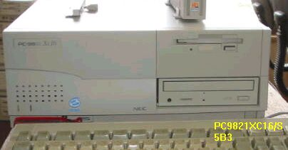
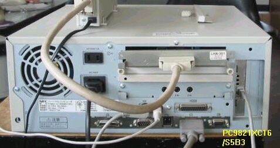

PC9821Xc16


比較的新しいPC98を入手しました。1997年の発売のXｃ16/S5B3で、USBの付いたPC98は初めてです。
入手したときの 状態は次のようになっていました。
・RAM 32MB； DIMMスロットに16MBをさし、48MBに増設
・HD 1.6GB； そのまま
・PC-9801-81高速回線アダプタ； 取り外し
・B55U-BMN SCSIボード； これをさすと立ち上がらなくなるので、LHA301に交換
・ODX656 PD/CDドライブ； 普通のCD-ROMに交換、PDは後でゆっくり調べる予定
とりあえず使い道がないので、これ以上手を加えずに、コレクションの１台として保存する ことにしました。
(2003/04/04 記)
PC9821のページに戻る